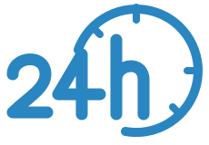

Sobre nós
Somos uma equipe dedicada ao desenvolvimento de uma solução tecnológica para o monitoramento de temperatura em biotérios.

TENHA SEGURANÇA COM SEU PROJETO
PLATAFORMA IOT PARA MONITORAMENTO DE BIOTÉRIOS
Tecnologia IOT para monitorar a temperatura, identificar variações e gerar alertas quando os limites forem ultrapassados.
Temperatura monitorada.

Tecnologia conectada.

Monitoramento contínuo.
Monitoramos continuamente a temperatura de biotérios, registrando as variações e permitindo que os responsáveis acompanhem as condições do ambiente e identifiquem alterações rapidamente.
Somos uma equipe dedicada ao desenvolvimento de uma solução tecnológica para o monitoramento de temperatura em biotérios.
Monitoramos a temperatura dos ambientes, registramos os dados e disponibilizamos as informações em uma plataforma web para acompanhamento.
Facilitamos a identificação de variações de temperatura por meio de histórico de dados e alertas, permitindo uma resposta mais rápida a alterações no ambiente.
Nosso objetivo é garantir a integridade dos biotérios por meio do monitoramento contínuo da temperatura, utilizando tecnologia IoT para gerar alertas e manter um ambiente estável para os experimentos.

Acompanhamos a temperatura dos biotérios em tempo real, 24 horas por dia, 7 dias por semana.

Identificamos variações de temperatura e notificamos a equipe antes que o problema afete os experimentos.

Acompanhamos a temperatura dos biotérios em tempo real, 24 horas por dia, 7 dias por semana.

Com tecnologia e automação, ajudamos a manter a estabilidade do ambiente e a qualidade dos seus resultados.
Quanto sua operação pode deixar de perder?
Simule o impacto financeiro de perdas causadas por variações de temperatura e descubra quanto o monitoramento pode ajudar a preservar.Em breve.
Em breve.